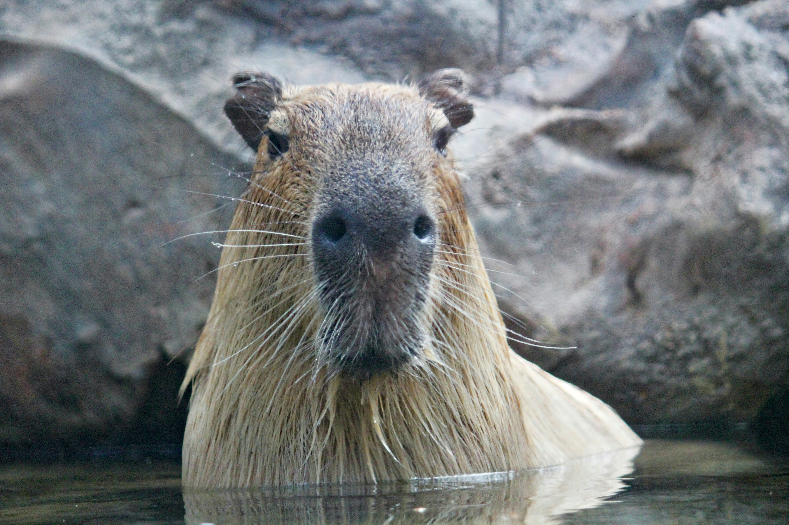

I love animals! When I get a little older, I'm planning on having a wide variety of pets. Here are some I'd really like:
Dogs

Reasons why I would love a dog:
- They are loyal
- They are friendly
- They are athletic
When it comes to pets, dogs are an absolute staple. Loyal, friendly, and always by your side, dogs have been the ideal pets for human beings since ancient times. Personally, I believe that you can't go wrong with dogs. With so many different breeds out there, everyone is bound to be satisfied. Another reason I like dogs, however, is because they tend to be active and athletic. As an active person myself, I would love a pet that likes running around with me!
Capybaras
Reasons why I want a capybara:
- They are super cute
- They are friendly with other animals
- They are quite calm
Capybaras, the world's largest rodent species, are all the rage on social media. Due to their cute looks, chill personalities, and goofy antics, they've taken the internet by storm. There are, however, two very important things when looking to get a capybara. First, they require some sort of pool or pond to swim around and lounge in. Second, they are social animals, and are very communicative with each other, meaning that you should at least have a pair of capybaras in order to provide them with the ideal environment.
Toucans

Why I want a toucan:
- They are so colorful
- They are very large
- They look hilarious
Toucans are one of the most well known species of birds, mainly due to their distinctive, massive beak. Popularized in many forms of media (including cereal boxes!), toucans will truly make you stand out as a pet owner. While their beaks may look heavy and unwieldy, toucans use their beaks with unparalled precision, able to pick tiny seeds from off the ground. With their surprisingly large size and vocal behaviors, taking care of a toucan may almost feel like taking care of a dog!